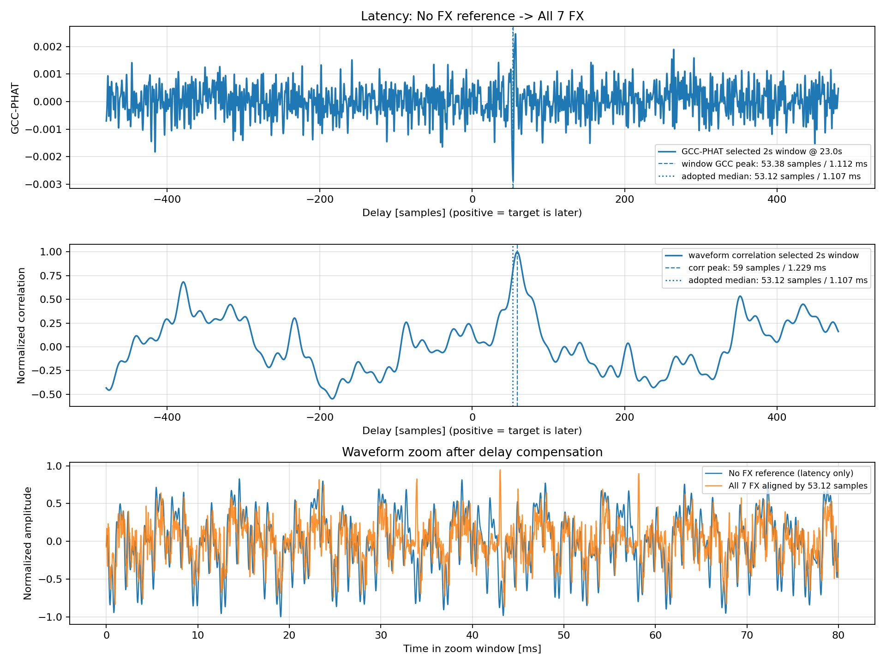
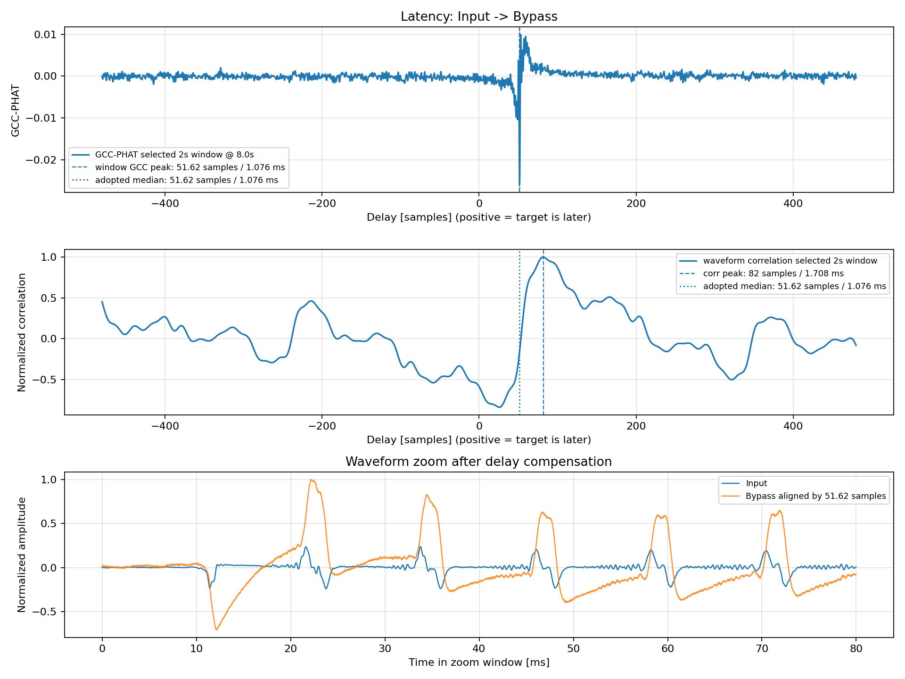
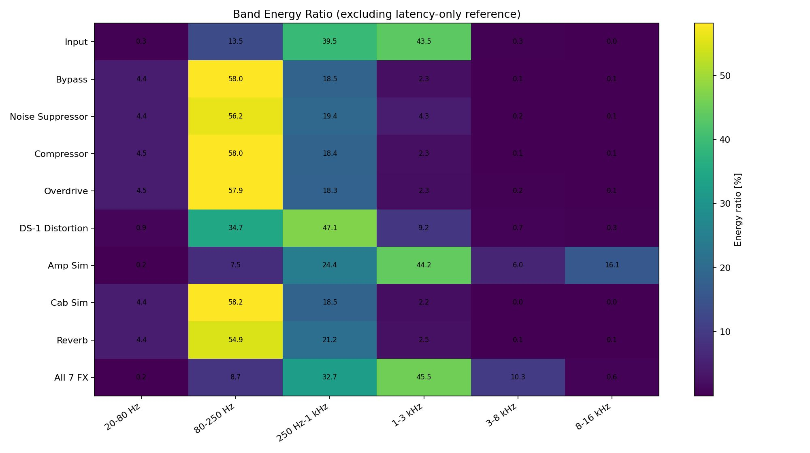
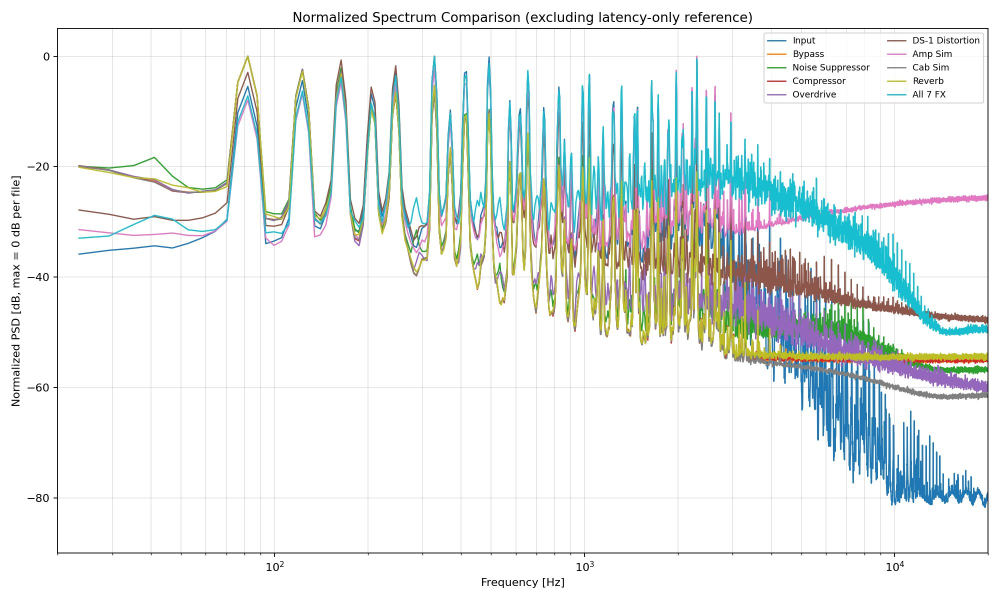
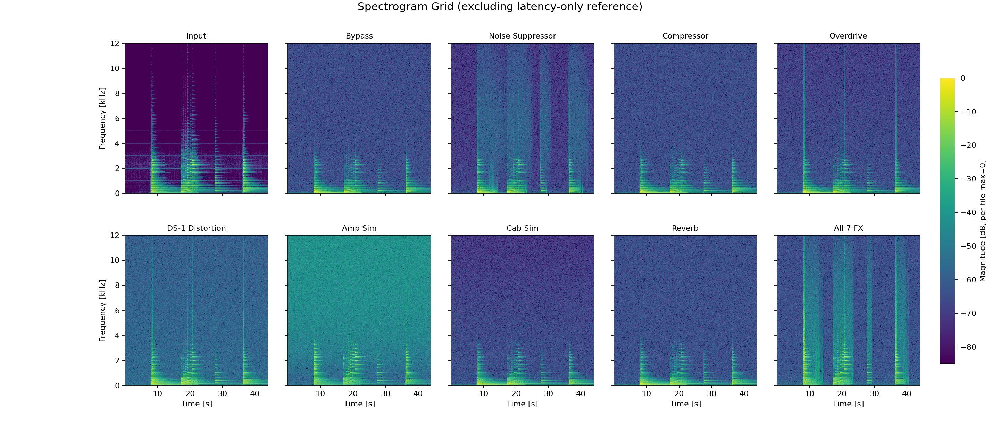

レイテンシー計測
FPGA上のDSPパイプラインがギター演奏に与える遅延を確認するため、入力信号、バイパス出力、全7エフェクト有効時の出力を比較しました。入力信号とバイパス出力の比較からシステム経路の参考遅延を、エフェクトなし基準信号と全7エフェクト有効時の出力の比較から全エフェクト有効時の相対遅延を測定しています。
遅延推定にはGCC-PHATと波形相互相関を併用しました。GCC-PHATは音量差や周波数特性差の影響を比較的受けにくいため、窓中央値を主な採用値としています。グラフ上段では、横軸が遅延サンプル数、鋭いピークの位置が推定遅延量です。
中段の波形相互相関は、2つの波形が最も似ている位置を確認する補助指標です。ギター信号は周期性を持つため、別のピークを拾う場合があります。下段は推定遅延に基づいて波形を重ねた図で、波形の完全一致ではなく、アタックのタイミングを確認しています。

エフェクトなし基準信号と全7エフェクト有効時のレイテンシー解析

入力信号からバイパス出力までの参考レイテンシー解析
測定結果として、入力信号からバイパス出力までの参考遅延は約51.6 samples、48 kHz換算で約1.08 msでした。全7エフェクト有効時の遅延は約53.1 samples、約1.11 msで、今回の測定条件では7種類のエフェクトを直列に通しても大きな遅延増加は確認されませんでした。
この結果から、複数のDSPブロックをFPGA上に直列実装しても、十分に低い遅延を維持できることを確認しました。
各メーカーのマルチエフェクターの実測例と比べても、本機の約1.11 msは1 ms台前半の低遅延レンジに入ります。
市販デジタルプロセッサーとの参考レイテンシー比較
機種
遅延の目安
FPGAギターエフェクター
約1.11 ms
BOSS GT-1000
約0.58〜0.7 ms
Fractal Audio Axe-Fx III
約1.6〜2.2 ms
Line 6 Helix Floor
約1.8〜2.0 ms
Neural DSP Quad Cortex
約1.86 ms以上
Kemper Profiler
約2〜3 ms
エフェクトごとの周波数特性と時間変化
各エフェクト出力について、帯域別エネルギー比率、正規化スペクトル、スペクトログラムを用いて解析しました。ここでは音量の大小ではなく、各エフェクトの音色傾向、歪みによる倍音、高域ノイズやfizz、周波数成分の時間変化を確認しています。
帯域別エネルギー比率のヒートマップ
帯域別エネルギー比率のヒートマップは、各音源のエネルギーがどの周波数帯に集中しているかを比較するグラフです。行が各音源、列が周波数帯域を表し、各セルの数値は該当帯域が占める割合です。明るいセルほど、その帯域にエネルギーが集中しています。
20〜80 Hzは超低域や振動成分、80〜250 Hzは音の太さ、250 Hz〜1 kHzはギターの芯、1〜3 kHzはピッキング感や抜け、3〜8 kHzはアタック感やfizz、8〜16 kHzは超高域成分やデジタル的なざらつきに関係します。

各エフェクト出力の帯域別エネルギー比率
入力信号では250 Hz〜1 kHzおよび1〜3 kHzの割合が大きく、ギターの芯や輪郭に関わる中域〜中高域成分が多いことが分かります。一方、バイパス出力は80〜250 Hzが大きく、低域寄りの傾向を示しています。この差にはハードウェア要因も含まれるため、DSPエフェクト単体の評価とは切り分けています。
DS-1 Distortionでは250 Hz〜1 kHz付近の中域が増え、ディストーションらしい押し出しが確認できます。Amp Simでは8〜16 kHz帯域が16.1%と大きく、超高域成分が強く出ています。fizzやデジタル臭さにつながる可能性があるため、後段のCab SimやLPFによる高域減衰処理が改善対象です。
正規化スペクトル比較
正規化スペクトル比較では、各信号の最大スペクトルレベルを0 dBにそろえ、音量差の影響を除いた状態でスペクトル形状を比較しています。横軸は周波数、縦軸は相対的な強さで、線が高い帯域ほど目立つ成分が多いことを表します。

各エフェクト出力の正規化スペクトル比較
正規化スペクトルでは、バイパス、ノイズサプレッサー、コンプレッサー、キャビネットシミュレーター、リバーブが低域〜中低域寄りに見えます。入力からバイパスまでの基準経路自体も低域寄りに見えるため、ハードウェア経路の影響も含めて評価する必要があります。
DS-1 Distortionは中域の成分が目立ち、歪みエフェクトとしてのキャラクターがスペクトル上にも現れています。一方、Amp Simは8 kHz以上の成分が強く、後段で適切に整えないと耳に痛い高域やfizzとして聞こえる可能性があります。
全7エフェクト有効時は1〜3 kHzの中高域成分が保持され、ギターの輪郭に関わる帯域が残っています。一方で3〜8 kHz帯域も残るため、抜けを残しながら高域のざらつきを抑える調整が必要です。今後はAmp Sim後段の高域減衰処理とCab Simの周波数特性を調整します。
スペクトログラム
スペクトログラムは、周波数成分の時間変化を可視化したものです。横軸が時間、縦軸が周波数、色の強さが成分の強さを示します。演奏中のどのタイミングでどの帯域が強く出ているかを確認できます。
縦方向に明るい筋はピッキングの瞬間、音の後ろに残る色はサステインやリバーブ成分、高域に広く出続ける色は高域ノイズやfizzの候補として読み取れます。

各エフェクト出力のスペクトログラム一覧
ノイズサプレッサーは、演奏していない区間で不要な成分を抑えるように動作しており、バイパスに近い時間周波数分布を保ちながら、非演奏時に高域成分が大きく残りにくい傾向が確認できます。今後は無音入力やノイズを含む信号を用いて、ゲートの開閉や減衰挙動をより詳細に評価していきます。
Amp Simでは高域側に広く成分が見られます。8 kHz以上が強く残ると、耳に痛いfizzやデジタル的なざらつきとして聞こえる可能性があります。Cab Simでは高域を抑える方向の特性が見られるため、今後は5〜6 kHz以上の減衰量や2〜4 kHzの抜けを調整します。
全体を通して
今回の解析では、全7エフェクト有効時でも1〜3 kHz帯域が45.5%となり、ギターの輪郭に関わる中高域成分が保持されていました。一方で、Amp Simでは8〜16 kHz帯域が大きく、全7エフェクト有効時にも3〜8 kHz帯域が残るため、高域の抜けを残しながらfizz成分を抑える調整が必要です。
現時点のDSPパイプラインは、低遅延で複数エフェクトを直列処理できています。一方、音質面ではAmp Sim後段の高域制御とCab Simの周波数特性が主要な改善ポイントだと考えています。